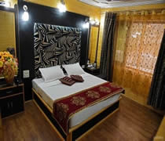
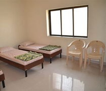
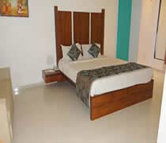

| |
|
|
13 રાત્રી / 14 દિવસ - ચારધામ યાત્રા
કેદારનાથ - બદ્રીનાથ - ગંગોત્રી - યમનોત્રી - હરિદ્વાર -- ઋષિકેશ
|
|
|
| * |
| * |
02 રાત્રી હરિદ્વાર - 02 રાત્રી રાનાચટ્ટી - 02 રાત્રી ઉત્તરકાશી - 02 રાત્રી સીતાપુર - 01 રાત્રી પીપલકોટી - 01 રાત્રી બદ્રીનાથ
01 રાત્રી શ્રીનગર - 02 રાત્રી ટ્રેન મુસાફરી
|
| * |
| * |
| * |
206, SAIGIRI APARTMENT, SAIBABA NAGAR, NAVGHAR ROAD, BHAYANDER(E), MUMBAI - 401105
Phone: - 09321590898 / 09322590898 / 09323790898,
Website - www.kanaiyatravels.com / www.uncleTours.com. / Email - kanaiyatravels@gmail.com |
| * |
|
|
|
|
Tour Details
Tour Price / Hotel Name
Inclusions / Exclusions
Terms & Condition
Send To Friend
Enquiry
Print
|
| * |
|
| |
|
| Days |
Tour Detail |
| Day 01 : |
મુંબઈ - સુરત - વડોદરા - અમદાવાદ થી હરિદ્વાર ( ર્ટ્રેઇન મુસાફરી ) |
| |
સવારે 10.55 વાગે અમદાવાદ થી ઉપડતી 09031 અમદાવાદ - હરિદ્વાર યોગા એક્સપ્રેક્સ ટ્રેઈન દ્વારા તેમજ સુરત થી સવારે 4.20 કલાકે ઉપડતી 09019 દેહરાદૂન એક્સપ્રેક્ષ દ્વારા તેમજ મુંબઈ થી સવારે 7.55 કલાકે ઉપડતી 02171 લોકમાન્ય તિલક - હરિદ્વાર એક્સપ્રેક્ષ દ્વારા - હરિદ્વાર જવા રવાના. રાત્રી ટ્રેન મુસાફરી. (No Any Food)ે |
| Day 02 : |
હરિદ્વાર આગમન |
| |
સવાર 10.00 વાગે હરિદ્વાર આગમન , સાંજે હાર કી પોરી પર ગંગા આરતી ના દર્શન કરવા, રાત્રી રોકાણ હરિદ્વાર. (Lunch || Dinner ) |
| Day 03 : |
હરિદ્વાર - રાણાચટ્ટી (240 KM) |
| |
વહેલી સવારે ચા - નાસ્તા બાદ વાયા મસૂરી થઇ રાણાચટ્ટી (યમનોત્રી બેઝ કેમ્પ ) જવા રવાના ( 9 -10 કલાક), આગમન બાદ હોટેલ માં ટ્રાન્સફર, રાત્રી રોકાણ રાણાચટ્ટી.
( Breakfast || Lunch || Dinner ) |
| Day 04 : |
રાણાચટ્ટી - યમનોત્રી - રાણાચટ્ટી (24 KM Return By Road & 10 KM Treck Return) |
| |
વહેલી સવારે 12 કિલોમીટર જાનકી ચટ્ટી જઈ ત્યાંથી 5 કિલોમીટર ઘોડા / ડૉલી / પગપરા યમનોત્રી ની પહાડ યાત્રા કરવી યમનોત્રી માં ગરમ પાણી ના કુંડ માં સ્નાન કરી યમનોત્રી મંદિર ના દર્શન કરી રીટર્ન હોટેલ પર આવવું , બપોર પછી નો સમય આરામ માટે. રાત્રી રોકાણ રાણાચટ્ટી.
( Breakfast Not Possible Today -- Today Only Lunch & Dinner will be served ) |
| Day 05 : |
રાણાચટ્ટી - ઉત્તરકાશી (110 KM) |
| |
સવારે ચા - નાસ્તા બાદ ઉત્તરકાશી જવા રવાના , રસ્તા માં શિવ મંદિર તેમજ કાશી વિશ્વનાથ મંદિર ના દર્શન કરવા બપોરે આગમન બાદ બાકી નો સમય આરામ માટે રાત્રી રોકાણ ઉત્તરકાશી. ( Breakfast || Lunch || Dinner) |
| Day 06 : |
ઉત્તરકાશી - ગંગોત્રી - ઉત્તરકાશી (180 km Return) |
| |
વહેલી સવારે 6.00 વાગે (90 કિલોમીટર / 8 કલાક રીટર્ન ) ગંગોત્રી જવા રવાના, પહોંચ્યા બાદ દર્શન - પૂજા કરી રીટર્ન ઉત્તરકાશી હોટેલ પહોચિઁછુ। રાત્રી રોકાણ ઉત્તરકાશી .
( Breakfast || Lunch || Dinner ) |
| Day 07 : |
ઉત્તરકાશી - ગુપ્તકાશી ( 215 KM) |
| |
વહેલી સવારે સીતાપુર જવા રવાના (8-9 કલાક) , રાત્રી રોકાણ સીતાપુર ( Breakfast || Lunch || Dinner ) |
| Day 08 : |
સીતાપુર - - કેદારનાથ -- સીતાપુર ( 35 km વાહન દ્વારા અને 16 km (એક સાઈડ ના અને રીટર્ન 32km ) પગપાળા / ડૉલી કે ઘોડા દ્વારા ) |
| |
ગુપ્તકાશી થી વહેલી સવારે 3.30 વાગે સીતાપુર ટેક્ષી સ્ટેન્ડ (2 km ) પહોંચવું અને ત્યાંથી (સ્વ ખર્ચે) જીપ / ટેક્ષી દ્વારા સોનપ્રયાગ થઈને ગૌરીકૂંડ પહોંચવું અને ત્યાંથી (16 કીલોમીટર / 5 કલાક - એક સાઈડ ના ) પહાડી માર્ગે પગપાળાં અથવા ઘોડા / ડૉલી (સ્વખર્ચે) દ્વારા કેદારનાથ પહોંચવું. દર્શન પૂજા બાદ પગપાળા / ડૉલી કે ઘોડા દ્વારા ગૌરીકુંડ પહોંચવ - અને ત્યાંથી ટેક્ષી દ્વારા સોનપ્રયાગ થઈન સીતાપુર થઇ હોટેલ પર પહોંચવું. (જો ટ્રાફિક જામ હોય કે વાહનો ની લાંબી લાઈન હોય તો - નો પાર્કિંગ હોવાથી યાત્રીઓ એ હોટેલ પર સ્વખર્ચે પહોંચવાનું રહેશે.) હેલિકોપ્ટર દ્વારા દર્શન કરવા વાળા યાત્રી ને હેલિપેડ પર ડ્રોપ કરવામાં આવશે. (નોંધ -- ગરમ કપડાં, રેઇનકોટ તેમજ છત્રી અને જરૂરી દવાઓ સાથે રાખવી. અને ખાસ - કેદારનાથ અને યમનોત્રી માં રસ્તાઓ ખુબજ ભયંકર હોવાથી તેમજ હવા પાતળી હોવાથી ઘોડા ને બદલે ડૉલી જ કરવી. તેમજ જો તમારા પર લક્ષ્મી ની કૃપા હોય તો કેદારનાથ યાત્રા હેલિકોપ્ટર દ્વારા જ કરવી.) , જે યાત્રી કેદારનાથ માં રાત્રી રોકાણ કરવા ઇચ્છતા હશે તેમણે સરકારી આવાસ / ગેસ્ટ હાઉસ / ધર્મશાલા / આશ્રમ કે અન્ય અનુકૂળ આવાસ માં રાત્રી રોકાણ કરવું. ( સ્વ - ખર્ચે), અને બીજા દિવસે વહેલી સવારે હોટેલ પર પહોંચવાનું રહેશે. ( Today Morning Breakfast and Lunch Will Not Be Possible -- Dinner Will Be Served Only Upon Arrival At The Hotel ) નોંધ : - ખરાબ મોસમ, તેજ હવા, વરસાદ કે કોઈ પણ કારણસર હેલિકોપ્ટર કેન્સલ થાય તો હેલીકોપટર ની ટીકીટ ના રિફંડ માટે અમે તમને જરૂરી બધી મદદ કરીશુ પરંતુ તેના રિફંડ માટે ની કોઈ જવાબદારી ટુર ઓપરેટર ની રહશે નહિ . |
| Day 09 : |
સીતાપુર થી પીપલકોટી ( 145 KM) |
| |
સવારે 9.30 વાગે ચા - નાસ્તા બાદ - વાયા ચોપતા થઈ પીપલકોટી જવા રવાના ( 7 - 8 કલાક). સાંજે આગમન બાદ હોટેલ / આશ્રમ / ગેસ્ટ હાઉસ માં રાત્રી રોકાણ.
( Breakfast || Lunch || Dinner ) |
| Day 10 : |
પીપલકોટી થી બદ્રીનાથ ( 80 KM / 5 કલાક) |
| |
સવારે 6.00 વાગે ચા - નાસ્તા બાદ - વાયા જોશીમઠ થઈ બદ્રીનાથ (80 km / 5 કલાક ) જવા રવાના. બપોરે આગમન બાદ અને બપોર ના ભોજન બાદ માણાગામ (ભારત નું છેલ્લું ગામ), વ્યાસ ગુફા, ગણેશ ગુફા, ભીમ પુલ વગેરે ની મુલાકાત. સાંજે બદ્રીનાથ મંદિર માં દર્શન, તપ્તકુંડ માં સ્નાન, મહાપ્રભુજી ની બેઠક ના દર્શન તેમજ પિતૃઓની મુક્તિ માટેનું પીંડ દાન અને શ્રાદ્ધ વિધિ. ભોલાગિરિ આશ્રમ / સ્વામિનારાયણ આશ્રમ, પરમાનંદ આશ્રમ કે મહારાષ્ટ્ર સદન માં રાત્રી રોકાણ. ( Breakfast || Lunch || Dinner ) |
| Day 11 : |
બદ્રીનાથ થી શ્રીનગર ( 185 KM / 8 કલાક) |
| |
વહેલી સવારે 4.00 થી 8.30 વાગ્યા સુધી નો સમય બદ્રીનાથ મંદિર પાસે આવેલ તપ્તકુંડ ના ગરમ પાણી માં સ્નાન - પૂજા - આરતી - દર્શન માટે ફ્રી સમય, 9.00 વાગે ચા - નાસ્તા બાદ શ્રીનગર જવા રવાના (185 km / 8 કલાક ). રાત્રી રોકાણ શ્રીનગર. ( Breakfast || Lunch || Dinner ) |
| Day 12 : |
શ્રીનગર થી હરિદ્વાર (130 KM) |
| |
વહેલી સવારે હરિદ્વાર જવા રવાના (3 - 4 કલાક), રસ્તામાં ઋષિકેશ સાઈટ સીઇંગ (ઓટો રીક્ષા દ્વારા - સ્વ ખર્ચે). હરિદ્વાર આગમન બાદ હોટેલ માં ટ્રાન્સફર, સાંજે હર કી પોરી ગંગા ઘાટ પર ગંગા આરતી ના દર્શન કરવા . રાત્રી રોકાણ હરિદ્વાર. ( Breakfast || Lunch || Dinner ) |
| Day 13 : |
હરિદ્વાર થી અમદાવાદ - સુરત - મુંબઈ ( ર્ટ્રેઇન મુસાફરી ) |
| |
સવાર થી બપોર સુધી નો સમય હરિદ્વાર માં સાઈટસીઇંગ તેમજ શોપિંગ તેમજ સ્વેચ્છા વિહાર માટે, બપોર ના ભોજન બાદ સાંજે 17.00 વાગે હરિદ્વાર રેલવે સ્ટેશન થી ઉપડતી 02172 હરિદ્વાર - લોકમાન્ય તિલક AC સુપરફાસ્ટ એક્સપ્રેક્સ ટ્રેન દ્વારા મુંબઈ તેમજ બપોરે 13.30 કલાકે ઉપડતી 09020 હરિદ્વાર - બાંદ્રા એક્ષપ્રેક્ષ ટ્રેન દ્વારા સુરત / વડોદરા તેમજ સાંજે 16.00 વાગે ઉપડતી 9032 યોગા એક્સપ્રેક્ષ ટ્રેન દ્વારા અમદાવાદ આવવા રવાના. રાત્રે ટ્રેઈન મુસાફરી. (Breakfast || Lunch || Light Parcel Dinner) |
| Day 14 : |
અમદાવાદ - વડોદરા - સુરત - મુંબઈ આગમન |
| |
સાંજે ટ્રેન ના સમય મુજબ અમદાવાદ / વડોદરા / સુરત / મુંબઈ આગમન. શ્રી કનૈયા ટૂર એન્ડ ટ્રાવેલ્સ દ્વારા આયોજિત પ્રવાસના યાદગાર અનુભવ સાથે પ્રવાસનો અંત. - ટુર સમાપ્ત - (No Any Food)
|
|
|
| ચારધામ યાત્રા માં જવા માટે સહુથી સારામાં સારો સમય સપ્ટેમ્બર અને ઓક્ટોમ્બર છે |
| |
| |
|
| |
| : TOUR COST AND HOTELS NAME : |
| Tour Cost - Per Person ( EX. મુંબઈ - સુરત - અમદાવાદ ) |
|
Destination & Super Deluxe Hotels Name |
| હરિદ્વાર શિવાય બાકી ચારધામ યાત્રા દરમ્યાન રૂમ માં બેડ પ્રમાણે 2 / 3 / 4 વ્યક્તિ પ્રતિ રૂમ રહેવાની વ્યવસ્થા - - વ્યક્તિ દીઠ
: |
Rs. 30,501.00/-
Per Person |
5 વર્ષથી નીચેનું બાળક હશે તો - બાળક દીઠ :
વાહન માં સીટ સાથે પરંતુ વધારાના મેટ્રેસ / પલંગ વગર - |
Rs. 9,500.00/-
Per Child |
ચારધામ યાત્રા મા 05 વર્ષથી વધુ ઉંમરના બાળકોને પુખ્ત તરીકે માનવામાં આવશે.
જો કોવિડ-19 જેવી બીમારી ને કારણે અથવા કોઈપણ સરકારી માર્ગદર્શિકાને કારણે યાત્રા રદ કરવામાં આવે તો, તમે ભરેલી રકમમાંથી ટ્રેન / ફ્લાઇટ ટિકિટ કેન્સલેશન ચાર્જ અને 5% GST ના બાદ કરીને બાકીની રકમ ની 1 વર્ષ ની ક્રેડિટ નોટ આપવામાં આવશે.
|
|
| હરિદ્વાર : |
હોટેલ વેંકટેશ / ગ્રેટ આનંદા / ઓએસિસ / પેરેડાઇસ / ખન્ના પેલેસ / સમાન |
| રાણાચટ્ટી : |
હોટેલ અનિલ / હિમાલયા / દીપેન / ક્રિશના / સમાન |
| ઉત્તરકાશી (નૈતઆલા) : |
હોટેલ મહિમા / દેવાંશ / ગંગાપુત્ર / એકાંત / ગંગા વ્યુ / સમાન |
| સીતાપુર : |
હોટેલ JPG પેલેસ / સમાન |
| પીપલકોટી / માયાપુર : |
હોટેલ હિમ આનંદ / જયદીપ / ધૌલીગંગા / ખુશાલ પેલેસ / સમાન |
| બદ્રીનાથ : |
ભોલાગીરી આશ્રમ / મહારાષ્ટ્ર સદન / સ્વામી નારાયણ આશ્રમ / પરમાર્થલોક આશ્રમ / સમાન |
| શ્રીનગર / નગરાશું / ગૌચર : |
સાદી હોટેલ / ગેસ્ટ હાઉસ / ધર્મશાલા / સમાન |
|
|
|
| TOUR COST INCLUSIONS & TOUR COST EXCLUSIONS |
| ટૂર ખર્ચમાં શામેલ છે |
|
ટૂર ખર્ચમાં શામેલ નથી |
- ગ્રુપ સાઇઝ મુજબ સ્થાનાંતરણ અને ફરવા માટેનું મોટું અથવા નાનું નોન AC વાહન.
- ચાર ધામ યાત્રા દરમ્યાન ગ્રુપ સાઇઝ મુજબ - નોન AC 12 - 14 સિટર નોન પુશ બેક ટેમ્પો ટ્રાવેલર અથવા 27 સીટર 2x 2 પૂશ બેક ડિલક્સ બસ દ્વારા મુસાફરી કરવાની રહેશે. (ગવર્મેન્ટ પરમીટ અને સ્થાનિક નિયમો અનુસાર )
- સમગ્ર ચારધામ યાત્રા દરમ્યાન - હરિદ્વાર માં ડીલક્ષ AC હોટેલમા અને હરિદ્વાર સિવાય બાકી દરેક જગ્યા પર નોન AC સાદી - સિમ્પલ હોટેલ / સરકારી આવાસ / ગેસ્ટ હાઉસ / ધર્મશાલા / આશ્રમમાં એક રૂમમાં 2 / 3 / 4 વ્યક્તિના હિસાબે રાત્રી રોકાણ.
- ટૂર પ્રોગ્રામ મુજબ જોવા લાયક બધાજ સાઇડસીઇંગ.
- શ્રી કનૈયા ટ્રાવેલ્સ ના પોતાના મારવાડી રસોઈયા દ્વારા બનાવેલ 100% શુદ્ધ શાકાહારી રસોઈ (બ્રેકફાસ્ટ, લંચ અને ડિનર, - વિવિધ પ્રકારની વાનગીઓ સાથે)
- જૈન યાત્રીઓ માટે સ્પેશ્યલ જૈન ભોજન ની વ્યવસ્થા
- મુંબઈ - સુરત - વડોદરા - અમદાવાદ થી હરિદ્વાર અને રીટર્ન 3 AC સ્લીપર ટ્રેન ટિકિટ ભાડું.
|
|
- ચોપતા , માના ગામ & ત્રિગુણી નારાયણી નો ખર્ચ યાત્રીઓ એ અલગ થી આપવાનો રહેશે (અંદાજે રૂપિયા 350/- થી 450 )
- ઘોડા, ડોલી, પિથ્થું, , હેલિકોપ્ટર ટિકિટ, વીમા પ્રીમિયમ, પોર્ટર-ચાર્જ, સ્ટ્રેચર ચાર્જ, લોન્ડ્રી, ગાઇડ ફી, ટેલિફોન, કોઈપણ પ્રવેશ ફી, બોટિંગ, કેબલ કાર ટિકિટ, કોઈપણ ગાર્ડન - સંગ્રહાલય, કીલા પ્રવેશ ટિકિટ, રીવર રાફટીંગ, કોઈપણ રમતો પ્રવૃત્તિઓનો ખર્ચ, જંગલ સફારી, દાન અને ભિક્ષા, ટીપ, રૂમ હીટર, દવાઓ, મિનરલ વોટર, કોલ્ડ્રિંક્સ અને વ્યક્તિગત પસંદગીઓ માટે કરવામાં આવેલા ખર્ચ.
- અન્ય કોઈપણ ખર્ચ જે ખાસ કરીને "ટૂર કોસ્ટ શામેલ" માં શામેલ નથી.
- રૂમમાં મીની બાર અને રૂમ સર્વિસ
- ટ્રેન અને ફ્લાઇટ મુસાફરી દરમિયાન ભોજન
- હરિદ્વાર & ઋષિકેશ લોકલ સાઇટસીઇંગ , તેમજ ચારધામ યાત્રા દરમ્યાન કોઈક જગ્યા પર રસ્તો બંધ હશે તો આગળ જવા માટે અને વ્યક્તિગત ઉપયોગ માટે કોઈપણ ટેક્સી, જીપ કે ઓટો રીક્ષા ભાડું.
- સરકારી સર્વિસ ટેક્સ (GST) 5% અતિરિક્ત.
|
|
|
| TERMS & CONDITION FOR DOMESTIC TOURS |
General Rules :
Tourist can enroll His / Her / their name(s) for the Tour by paying a deposit (non-refundable) of INR 2500/- per person For booking of any class in train and / or by air, additional difference amount is required. The difference should also be paid in advance. The balance amount should be paid 15 days prior to the date of departure. If the balance amount is not paid before 15 days, it will be deemed as cancelled and the deposit will not be refunded. We reserve the right to cancel the Tour, alter the routes, carriers, time-tables, itinerary and accommodation without prior notice.
Tourist travels at their own risk. Neither the Tour operator nor their representatives or staff accept any liabilities or responsibilities for any damage, loss, injury, accident, death etc, during the Tour howsoever it might have caused.
Any increase in Air / Bus Fares should be borne by the passenger only.
The management reserves the right to take all necessary steps including suspending the passengers who creates trouble for the management or to the other fellow passengers.
If due to any reason beyond our control like riots, accidents, flood, political unrest, bandh calls or any natural, or man made calamities, the Tour programme needs to be changed or extended, then the additional expenditure for the same will be borne by the passengers. If any passenger has to leave the Tour mid way due to any reason, then there shall be no refund for the remaining part of the Tour and the expenses for returning back shall also be borne by the passengers only.
If due to any reason beyond our control, we have to cancel some sight seeing places, there shall be no refund for the same. If a Tour is cancelled from our part then the cost and responsibility of organising the new Tour will be of passengers only.
Any complain regarding our services like Hotels, Bus, etc, passengers are advised to inform our office immediately by Phone / Fax so that the same can be re-addressed on the spot, no complains or refund for the same be entertained after completion of the Tour.
Any dispute / claims subject to Thane Jurisdiction.
Any change / additional Govt. Service tax levied must born by the passengers.
Timings mentioned in the itinerary for the Bus / Flight journey are estimated only. There are frequent chances of delay in arrival / departure at destination due to various reasons.
Postponement of journey is not allowed. It will be treated as cancellation and accordingly the cancellation charges will be applicable.
Preponement of journey is not allowed. It will be treated as cancellation and accordingly the cancellation charges will be applicable.
Child (5-11 yrs) with extra bed rate will be given only mattress in the parents room. Child up to 4 years will not be given any extra bed and no seats in train and bus.
There will be NO refund for any unutilized service on the Tour.
other claim.If any Airline / Trainis delayed or Canceled, Kanaiya Travels & Travels is not responsible for any compensation for Hotels, Meals, Sight Seeing or any other claim.
In case the company is compelled to cancel any Tour programme the total amount deposited will be refunded by A/C payee Cheque and the Tour operator will not be responsible for anything else.
Railway Arrangements :
- The charges shown in each program do not include any kind of railways fare of either side. Tourists are required to arrange the railway tickets by them selves. The company is not responsible for any problem/s regarding railways Tickets.
- It is necessary to book at least 60 days in advance before the schedule departure of the Tour. We do not accept any responsibilities and liabilities for the railway tickets of the passengers who book with us for less than 60 days from the scheduled departure of the train. If we have to make any alternate arrangement, then the extra cost of making alternate arrangement should be borne by the passengers only.
- If a train is missed for any reason/s or a train is cancelled by the railway authorities, in such cases whatsover alternate arrangements made by the Tour manager will be abide to every Tourist and if any extra amount for making such arrangements is to be paid the same will have to be borne by the Tourist.
- Berth Nos. & Coach Nos. of Railway Tickets are allotted by the computer and therefore passengers have to accept as they are given.
- Every Tourist joining the Tour is requested to keep with him the photo ID proofs of Indian Nationality such as Driving License, Passport, Election / Income tax PAN Card, Post Identity Card etc. during the Tour.
- NO SERVICES & MEALS DURING TRAIN JOURNEY.
- Date of Departure and the duration of the Tour program is mentioned from Mumbai in this literature to facilitate the Tourists to arrange their railway/Air tickets for the Tour journey.
- No Coolie Sarvice.
Transport Arrangements :
- The company will arrange the Non A/C vehicle arrangements to visit the places of sight seeing for one time only.
- No arrangements of vehicle will be made again if the Darshan or the entry time of the visiting place is closed, road blockage or for any reason so far.
- Tourist will have to go by walk to the places nearby of the stay of our hotel and to the place where our bus can not reach. If the Tourist desire to go there by any other vehicle, he / she will have to arrange at their own cost.
- For child independent seat booked will only be provided a separate seat in bus journey
Food Arrangement :
- Morning tea / coffee with breakfast Lunch & Dinner will be served as per convenience during the bus journey. Sweet dish will be served thrice in week. Plates for serving food will be arranged by the company and will be washed and cleaned by the company staff.
- Special Arrangements for Jain Foods.
- The company will not arrange a tea / coffee, lunch or dinner during the Train / Air journey.
- Breakfast, Tea, Lunch Dinner will not be provided in the hotel room.
- Milk powder is being used for the preparation of tea / coffee. and Any Milk Item.
- Evening Tea / Coffee not provide during the journey.
- NO SERVICES & MEALS DURING TRAIN JOURNEY.
Stay Accommodations :
- We have published the names of the Hotels for each Tour, even though we reserve the right to change the same, if the accommodation is not available in the Identified / Specified Hotel for the particular package Tour due to reasons beyond our control. We shall make all our best efforts to shift the passengers to the Hotel maintaining / having more or less the same standards. No refund will be allowed when we have provided alternative / similar accommodation. The rooms shall be allotted as per the check-in time of the respective Hotels, and they shall have to be vacated as per the check-out time of the Hotel.
- Night stay accommodations will be arranged in good hotel and attached toilet bath, Double bed Non A/C room will be provided between two full tickets.
- Family consisting of more than two members will be provided an extra mattresses in their room. For child independent seat booked will only be provided a separate seat in bus journey and separate mattress in the room. Hotel rooms are not very big so maximum one extra bed will be arranged in room.
- Breakfast, Tea, Lunch Dinner will not be provided in the hotel room.
- In Bedri Kedar, Gangotri, Yamunotri, regular Tour, room will be provided between Two / Three / Four passengers will be accommodated in a room.
- Washing of clothes in hotel rooms is strictly prohibited.
- Tourists will have to use their own towel / soap etc. in hotel rooms.
- Double Bed Room will be arranged among 4/5 members during the short stay required for bath and fresh up.
- Hotel rooms are booked in advance. As such the same will be provided and vacated as per check in and check out time of the Hotel. Members will have to co-operate accordingly. In case of provision of less number of Rooms by the Hotel management due to any reason, Rooms will be arranged in other Hotel and the members will have to accommodate themselves accordingly and will have to co-operate. No kind of refund will be given by the Tour operator. For any reason if the arrangements of stay are made at the place other than the actually booked, the members will have to accept such arrangements and no kind of any refund will be made by the Tour operator.
- Child (5-11 yrs) with extra bed rate will be given only mattress in the parents room. Child up to 4 years will not be given any extra bed and no seats in train and bus.
- A single Tourist seeking separate room facility will have to pay extra half room Tariff rate of the Hotels Booked.
Personal Expenses :
- Personal expenses such as Coolie Charges, Ponny, Doli, Kandi, Rope Way, Timber Trail, Golden Beach Entrance charges, Hot Water, Room Heater, A/C. Charges, Airport TAX, Mineral Water etc. are not included in the Tour price and it shall be borne by the PASSENGER/S ONLY.
List of Articles to be Carried :
- Small bag of 22" X 18 "" bedding ( for Rail Journey, Air pillow, Bed sheet, Blanket only ), clothes, towel, tooth paste, brush, glass, water bag, torch, knife, additional lock, chain for bag during rail journey, personal medicines etc. are required to be carried for convenient journey. Tourists joining hill station programmes are required to carry woolen clothes also. Members are advised to get their luggage / baggages insured.
- Leh - Ladakh / Amarnath / Chardham / Kailash Mansarover Tour Passanger Carried Minmum Luggage ( Max. 1 bag )
|
| Cancellation charges |
|
Liability |
- Before 40 days of Tour departure Rs. 5000/- per person (Minimum Cancellation charges)
- Before 25 days of tour departure 30% of total tour price per person.
- Before 20 days of tour departure 40% of total tour price per person.
- Before 15 days of tour departure 50% of total tour price per person.
- Before 10 days of tour departure 70% of total tour price per person.
- Before 07 days of tour departure 80% of total tour price per person
- Within 05 days 100% of the total Tour cost.
- Minimum Cancellation Charge Rs. 5000/- + Government Service Tax (5 %) + Railway and Flight Cancellation Charge. per person.
|
|
|
| We are Travel Agent and Holiday Organizers only and act as an agent for clients on one side and the operator of the various facilities on the other side in the best interest of the clients. We do not own any Hotel & do not operate or control any Airlines, other services like transport services / guides, Although we try our best to arrange and render best services yet we do not hold any responsibility on any account whatsoever of the performance of the Hotels, Airlines, Guide Services, Transport Services, opening of the sightseeing places, other services or anything else on which we do not have direct control. We do not bear any responsibility & shall not be liable, whatsoever for any dissatisfaction, loss of life and property, death, damages etc. Caused by the act or default or management or employees of such independent contractors and also any consequences arising out of natural calamities, strikes, breakdown and facilities, accidents, negligence, delay in services of all concerned and for any act of omission or inconveniences caused in connection with the travel facility etc. We shall not be responsible for any loss / damage / claim / financial compensation and any liability in any form / in any respect and on any account whatsoever. It is advisable to take comprehensive insurance including illness, accidental or anyothe |
|
|
I, _________________________________________________, have read the above rules and regulations Serial No 1 to 20 and abide by it and accept the Terms and Conditions with unconditional consent, without modification of the terms, conditions and notices contained herein.
Signature in acceptance:
Name:
Date:
Place: |
|
| |
| |
- કન્ફર્મ રિઝર્વેશન ટ્રેન ટિકિટ માટે 120 દિવસ પહેલા બુકિંગ કરાવવું જરૂરી છે.
- જો આપના ઉપર લક્ષ્મીજી ની કૃપા હોય તો કેદારનાથ યાત્રા હેલીકોપટર દ્વારા અને યમનોત્રી યાત્રા ઘોડા કે ડોલી દ્વારા જ કરજો. પગપાળા થાકી જશો અને હેરાન પરેશાન થઇ જશો.
- ટૂર માં આવનાર અતિથિઓને વિનંતી કરવામાં આવે છે કે તેઓ કોઈપણ એક ઓરિજિનલ ફોટો આઈડી પ્રૂફ (પેન કાર્ડ સિવાય) એટલે કે પાસપોર્ટ / ડ્રાઇવિંગ લાઇસન્સ / આધાર કાર્ડ / મતદારની આઈડી સાથે રાખે. તેમજ બુકિંગ સમયે તેની જ એક નકલ પણ સબમિટ કરો.
- પ્રિ પેઈડ અને પોસ્ટ પેઇડ બંને જ નેટવર્ક ઉત્તરાખંડ માં કાર્યરત છે. ઉપલબ્ધ નેટવર્ક - એયરટેલ - બીએસએનએલ - જિઓ - આઇડિયા અને વોડાફોન છે..
- આ ટૂર દિવસ 2 ના રોજ બપોર ના ભોજન સાથે શરૂ થાય છે અને 13 માં દિવસે લાઈટ પાર્શલ ડીનર સાથે સમાપ્ત થાય છે.
- પહાડી એરિયામાં આબોહવા નું નક્કી નથી હોતું. તેથી તમારે શિયાળો, ઉનાળો અને ચોમાસુ ને દયાન માં રાખીને - થર્મલ્સ, ગ્લોવ્સની જોડી, મંકી કેપ, કપાસ, સ્વેટર, સન સ્ક્રીન અને વિન્ટર લોશન, હોઠ મલમ,સન ચશ્મા , આરામદાયક સ્પોર્ટ્સ શૂઝ, છત્રી / વિન્ડચેટર, વિક્સ, કમ્પોર, નીલગિરી વગેરે સમાન સાથે રાખવાની જરૂર છે.
- અધિક ઉંચાઈ વાળી જગ્યા પર ઓક્સિજન નું પ્રમાણ ઓછું હોય છે તેથી માથું દુખવું, ચક્કર આવવા, ભૂખ ના લાગવી, ઉલ્ટી થવી, નાક માંથી લોહી નીકળવું, લુસ મોસન થવા, વગેરે 1 - 2 દિવસ ના સામાન્ય લક્ષણ છે તેથી ઘભરાવાની જરૂર નથી. તમે તમારી રોજીંદી જરૂરિયાત વાલી દવાઓ અને મેડિકલ કીટ સાથે રાખો.
- અધિક ઉંચાઈ વાળી જગ્યા પર પાણી પુષ્કર પીવો, ઓછું બોલો, જમ્પ ના કરો, દોડો નહિ , અને ભૂખ કરતા ઓછું જમો.
- અસ્થમા, હૃદયરોગ, બાયપાસ ના દર્દીઓને કેદારનાથ , બદ્રીનાથ, યમનોત્રી , ગંગોત્રી , સ્પીતી વેલી, લદ્દાખ, તાવાંગ, લાચુંગ, સિક્કિમ જેવા વધુ પડતા ઉંચાઈ ( High Altitude ) વાળા સ્થળ પર યાત્રા કરવાની સલાહ નથી. છતાં પણ જતા પહેલા તમારા ડોક્ટર ની સલાહ લો.
- કેદારનાથ માં અંદાજિત ખર્ચ :- ઘોડા - રૂપિયા 2000 થી 2500, ડોલી - 5500 થી 6500/- , હેલિકોપ્ટર - 8500 થી 9500,
- યમનોત્રી માં માં અંદાજિત ખર્ચ :- ઘોડા - રૂપિયા 1500 થી 2000, ડોલી - 3500 થી 4500/-
- હરિદ્વાર & ઋષિકેશ લોકલ સાઇટસીઇંગ , તેમજ ચારધામ યાત્રા દરમ્યાન કોઈક જગ્યા પર રસ્તો બંધ હશે તો આગળ જવા માટે અને વ્યક્તિગત ઉપયોગ માટે કોઈપણ ટેક્સી, જીપ કે ઓટો રીક્ષા ભાડું.
- ટ્રેન મુસાફરી દરમ્યાન ચા - પાણી - નાસ્તા કે ભોજન ની કોઈ પણ સર્વિસ આપવામાં આવશે નહિ.
|
Note :-
-
ભારત ની કોઈ પણ ટૂર માટે બુકિંગ સમયે મિનિમમ વ્યક્તિ દીઠ રૂપિયા 3500/- (નોન રિફંડેબલ ) ભરવાના રહેશે. અને પ્રવાસ ના 20 દિવસ પહેલા ફાઇનલ પેમેન્ટ જમા કરાવાયુ ફરજીયાત છે, અન્યથા તે પ્રવાસી પ્રવાસ માં જોડાવાના નથી તેમ સમજીને તેમના નામ, હોટેલ, ટિકિટ તેમજ અન્ય વ્યવસ્થાઓ કેન્સલ કરવામાં આવશે અને ભરેલા પૈસાનું કોઈ પણ રિફંડ મળશે નહિ.
-
ક્રેડિટ / ડેબિટ કાર્ડ, નેટ બેન્કિંગ તેમજ કોઈ પણ જાતના પેમેન્ટ ટ્રાન્સફર માટેના તમામ ચાર્જ ગ્રાહક દ્વારા ભરપાઈ કરવામાં આવશે.
- વાહન અને ડ્રાઈવર માત્ર પ્રવાસના સાઇડસીઇંગ ના કાર્યક્રમ મુજબનું જ તમારી સાથે રહેશે। પોતાના અંગત ઉપયોગ માટે વાહન તેમજ ડ્રાઈવર ની સર્વિસ મળશે નહિ. તેમજ જે જગ્યા પર આપણા નક્કી કરેલ વાહન ને જવાની પરમિશન નહિ હોય તેવા સ્થળે યાત્રી ઓ એ સ્વખર્ચે જવાનું રહેશે. એક જ પોઇન્ટ પર બીજી વખત લઇ જવામાં નહિ આવે.
- વાહનમાં પ્રદાન કરવામાં આવતી ઓડિયો - વિડિઓ સિસ્ટમ કોમ્પ્લિમેન્ટ્રી છે, અમે તેના માટે અતિરિક્ત કંઇપણ ચાર્જ લેતા નથી અને તેથી, જો ઓડિયો - વિડિઓ કાર્યરત ન હોય, વાહનમાં ન હોય અથવા ટૂર દરમ્યાન કામ કરવાનું બંધ કરે, તો તેના માટે કોઈ પણ એમાઉન્ટ બિલ માંથી બાદ કરવામાં આવશે નહિ.
- પ્રવાસ આયોજન એ સર્વિસ ની વ્યવસાય છે, અમે ફક્ત એજેન્ટ તરીકે કાર્ય કરીયે છીએ અમે કોઈ પણ ટ્રાન્સપોર્ટ તેમજ હોટેલ ના મલિક નથી, અમે ગ્રાહક ને સારામાં સારી સર્વિસ મળી રહે તે હેતુ થી કાર્ય કરતા હોઈએ છીએ. તેમ છતાં પણ કોઈક વાર અગવડતા - સગવડતા રહેતી હોય છે , તો ટૂર ઓપરેટર તેના માટે જવાબદાર રહેશે નહિ.
- ચારધામ યાત્રા દરમ્યાન રૂમ માં બેડ ની સગવડતા પ્રમાણે એક રૂમ માં 2 / 3/ 4/ વ્યક્તિ ના હિસાબે રોકાવાનું રહેશે. તેથી બુકિંગ કરાવતી વખતે સમજી - વિચારીને યોગ્ય નિર્ણય લેવો કારણ કે ચારધામ યાત્રા દરમ્યાન ગમે તેટલા રૂપિયા ખર્ચવા છતાં પણ છેલ્લી ઘડી પર એકપણ રૂમ મળતો નથી હોતો.
- હોટેલ માં ચેક-ઇનનો સમય બપોર ના 12.30 વાગ્યા નો અને ચેક-આઉટનો સમય સવાર ના 10.00 વાગ્યા હોય છે, જેથી હોટેલ માં વહેલું ચેક ઈન અને મોડું ચેક આઉટ હોટેલ માં રૂમ ઉપલબ્ધતાને આધારે રહેશે.
- બધા હોટેલનું નામ અને પ્રસ્થાન તારીખ કામચલાઉ છે; અમે કોઈપણ જરૂરી ફેરફાર કરવા માટેના તમામ હક અનામત રાખીએ છીએ. અને પસંદ કરેલી હોટેલ્સ અને રૂમ બુકિંગ સમયે ઉપલબ્ધતાને આધિન છે.
- રૂમ હીટર યાત્રી દ્વારા સીધી ચુકવણી ના આધાર પર વધારાના ખર્ચ સાથે ઉપલબ્ધ.
- કોઈ પણ જગ્યાએ પોતાના હિસાબે બરાબર ભાવતાલ કરીને જ ખરીદી કે સ્પોર્ટ્સ એકટીવીટી કરવી. સાવધાન રહો, તમને ઘોડેસવારી, ખરીદી અને રમતગમતની પ્રવૃત્તિમાં ઠગ કરવામાં આવી શકે છે, તેથી તમારે સાવચેત રહેવું જરૂરી છે. શ્રી કનૈયા ટ્રાવેલ્સ કોઈ ચોક્કસ દુકાન પર ખરીદી કરવાની ભલામણ કરતું નથી, તે મહેમાન / પ્રવાસીની સંપૂર્ણ વિવેકબુદ્ધિ છે.
- રમખાણો, અકસ્માતો, પૂર, ચક્રવાત, વરસાદ, ભૂસ્ખલન, રાજકીય અશાંતિ, ભારત બંધ, અથવા કોઈ કુદરતી કે માનવસર્જિત આપત્તિ જેવી કોઈ પણ ખલેલને લીધે થતા કોઈપણ પ્રકારનાં નુકસાન માટે શ્રી કનૈયા ટ્રાવેલ્સ કોઈપણ પ્રકારના નુકસાન કે રિફંડ માટે જવાબદાર નથી. (દા.ત .. ફ્લાઇટ ટિકિટ, ટ્રેનની ટિકિટ, હોટેલ બુકિંગ, વાહન બુકિંગ, દિવસોનો બગાડ, ખાદ્ય, ફરવાનું, ઈજા અને મૃત્યુ, ચોરી, લૂંટ, વગેરે… )
- પ્રવાસીઓ તેમના પોતાના જોખમે મુસાફરી કરે છે. શ્રી કનૈયા ટ્રાવેલ્સ અથવા તેમનો પ્રતિનિધિ અથવા સ્ટાફ કોઈપણ નુકસાન, ઇજા, અકસ્માત, મૃત્યુ , ચોરી - લૂંટફાટ વગેરે માટે કોઈપણ રીતે જવાબદાર રહેશે નહીં.
- કોઈ પણ પરિસ્થિતિમાં જો કોઈ મુસાફર ને ટૂર પેકેજ મધ્યમાં છોડવાની જરૂર પડે તો તેને કોઈ પણ રિફંડ આપવામાં આવશે નહીં. તેમજ કોઈપણ મુસાફરો જે ટૂરમાં ઉશ્કેરણી જનક પ્રવૃત્તિઓ કરે છે અને ટૂરના સંચાલનમાં ખલેલ પહોંચાડે છે તેને ટૂરમાંથી બાકાત રાખવામાં આવશે અને તેના માટે કોઈ રીફંડ આપવામાં આવશે નહીં.
- વ્યક્તિ દીઠ 12 કિલો સુધી લગેજ ની હેરફેર (રેલવે સ્ટેશન અને એરપોર્ટ છોડીને) કનૈયા ટ્રાવેલ્સ / હોટેલ ના માણસો કરશે, તેનાથી વધારે લગેજ ની ઉંચકવાની કે સાચવવાની જવાબદારી જે તે યાત્રી ની પોતાની રહેશે.
- ગ્રુપ પ્રવાસ (ટુરમાં ) માં જો પ્રવાસીઓ ની સંખ્યા 15 વ્યક્તિ કરતા ઓછી હશે તો હોટેલ ના રેસ્ટોરેન્ટ માંથી ફક્ત બ્રેકફાસ્ટ અને ડિનર આપવામાં આવશે.
- જો ફ્લાઇટ / ટ્રેન મોડી થાય કે રદ કરવામાં આવે તો તેના માટે શ્રી કનૈયા ટ્રાવેલ્સ જવાબદાર રહેશે નહીં. ટૂર બુકિંગ કરતા પહેલાં કૃપા કરીને નિયમો અને શરતો કાળજીપૂર્વક વાંચો.
|
| |
| |
| |
| |
| |
સરળ કેન્સલેશન ( પરંતુ અમે ખરેખર તે જોવા માંગતા નથી - અમે તમને રજાઓનો આનંદ માણતા જોવા માંગીએ છીએ..)
- ટૂર બુકિંગ કેન્સલેશન ટૂર બુકિંગ કરાવનાર વ્યક્તિ તરફથી લેખિત માં જાણ કાર્ય બાદ જ કેન્સલ કરવામાં આવશે.
- ટૂર ઉપડવાની તારીખ થી 20 દિવસ પહેલા સુધી વ્યક્તિ દીઠ રૂપિયા 5000/- + GST & ફ્લાઈટ / રેલ ટિકિટ કેન્સલેશન ચાર્જર્સ કપાશે.
- ટૂર ઉપડવાની તારીખ થી 4 થી 20 દિવસ સુધી વ્યક્તિ દીઠ રૂપિયા 10000/- + GST & ફ્લાઈટ / રેલ ટિકિટ કેન્સલેશન ચાર્જર્સ કપાશે.
- ટૂર ઉપડવાના 4 દિવસ ની અંદર કોઈપણ પ્રકાર નું રિફંડ મળશે નહિ.
- (નોંધ : કુદરતી, રાજકીય, કોવીડ - 19 જેવી બીમારી કે અન્ય કોઈપણ કારણસર પૂરો ટૂર પોગ્રામ કેન્સલ કરવો પડે તો પ્રતિ વ્યક્તિ વહીવટ ખર્ચ ના રૂપિયા 2500/- + ફ્લાઈટ ટિકિટ & રેલ ટિકિટ કેન્સલેશન ચાર્જર્સ કાપવામાં આવશે. અને બાકીની રકમ ની 1 વર્ષ ની ક્રેડિટ નોટ આપવામાં આવશે. (વિમાન ની ગ્રુપ ટિકિટ નોન રિફંડેબલ હોય છે તેથી તેનું કોઈ રિફંડ મળશે નહિ.)
|
| |
|
- શા માટે કનૈયા ટ્રાવેલ્સ જ ??? -- આ સવાલ નો જવાબ અમારી સાથે ફરી ગયેલા બધા ગ્રાહકો દ્વારા આપવામાં આવે છે. ગ્રાહકો પ્રત્યે ની પ્રતિબંધતા, વ્યક્તિગત સંપ્રક, વિનમ્ર સેવા, પ્રામાણિકતા & પારદર્શિકતા, ટૂર પર કોઉંટીમ્બીક વાતાવરણ, વગેરે, એક વાર જે વ્યક્તિ અમારી સાથે ફરે છે તે અમારો આજીવન મેમ્બર બની જાય છે.
- 26 વર્ષ કરતા પણ વધારે ટ્રાવેલ્સ ઇન્ડસ્ટ્ટ્રી નો અનભવ.
- 3,50,000 કરતા પણ વધારે 100% સંતુષ્ટ યાત્રીઓ, અને 70% કરતા પણ વધારે નિયમિત અમારી સાથે ફરવા વાળા યાત્રીઓ.
- સીનીઅર સીટીઝન નાગરિકો અને બાળકોનું વિશેષ ધ્યાન.
- ચા, કોફી, બ્રેકફાસ્ટ, લંચ અને ડિનર. (વિવિધ પ્રકારની નવી નવી વાનગીઓ સાથે) કનૈયા ટ્રાવેલ્સ ના પોતાના મારવાડી રસોઈયા દ્વારા બનાવવામાં આવેલ 100 % શુદ્ધ શાકાહારી પોતાનું રસોડું.
- જૈન યાત્રીઓ માટે જૈન ભોજન ની વિશેષ વ્યવસ્થા.
- જમ્મુ & કાશ્મીર , લેહ લડાખ, નોર્થ ઇસ્ટ, સિક્કિમ, કેરાલા, સાઉથ, હિમાચલ , ઉત્તરાખંડ, નેપાળ, ગંગાસાગર, પુરી, ગુજરાત, ચારધામ અને અમરનાથ યાત્રા માટે શ્રેષ્ઠ અને અગ્રણી ટૂર ઓપરેટરનો એવોર્ડ વિજેતા.
- દરેક સ્થળે રહેવા માટે સારામાં સારી સાફ સુથરી અને સારી કેટેગરી અને સારા લોકેશન વાલી લકઝરી હોટેલો ( ચારધામ સિવાય ) .
- સંપૂર્ણ ટૂર કનૈયા ટ્રાવેલ્સના મા લિ ક (ચેતન ભાઈ) ની દેખરેખ હેઠળ રહેશે. અમે માત્ર સ્ટાફ પર આધારિત નથી રહેતા. (બીજા કોઈપણ ટૂર ઓપરેટરો ટુર ની સાથે જતા પણ નથી અને મોટી મોટી વાતો કરીને બિન અનુભવી માણસો સાથે રામભરોસે પ્રવાસીઓને મોકલી દે છે)..
- સાહેબ... તમે મને રૂપિયા તો ઠીક પરંતુ તમારા અતિ વહાલા પિરવાર ને આનંદ કરાવવા માટે મને વિશ્વાસ પૂર્વક સોંપી રહ્યા છો, .. આ મારા માટે અમૂલ્ય અને ગૌરવ ની વાત છે .. તો ... તે ભરોસો હું કદાપિ તોડીશ નહિ અને એટલે પ્રવાસ નો સાચો આંનદ મેળવવો હોય તો અમારા ઉપર વિશ્વાસ રાખો અને તો કોઈપણ પ્રકાર ની લાલચ માં પડ્યા વગર તમે તમારા પરિવાર ના પ્રવાસ ના 100% આનંદ માટે યોગ્ય અને વ્યાજબી રૂપિયા ખર્ચો અને બધી જવાબદારી અમને સોંપીને ચિંતામુક્ત થઇ જાઓ.
- શ્રી કનૈયા ટ્રાવેલ્સ દરેક સમયે મુશ્કેલી મુક્ત અને આનંદપ્રદ અનુભવની બાંયધરી આપીએ છીએ.
|
| |
| સમગ્ર ચારધામ યાત્રા દરમ્યાન - હરિદ્વાર માં ડીલક્ષ AC હોટેલમા અને હરિદ્વાર સિવાય બાકી દરેક જગ્યા પર નોન AC સાદી - સિમ્પલ હોટેલ / સરકારી આવાસ / ગેસ્ટ હાઉસ / ધર્મશાલા / આશ્રમમાં એક રૂમમાં 2 / 3 / 4 વ્યક્તિના હિસાબે રાત્રી રોકાણ. |
|  |
|
 |
|
 |
|
 |
|
 |
| HARIDWAR (Deluxe AC Room) |
|
RANACHATTI (Simple Room) |
|
BADRINATH (Simple Room) |
|
UTTARKASHI (Simple Room) |
|
PIPALKOTI (Simple Room) |
|
| |
| MORNING BREAKFAST |
|
LUNCH |
|
DINNER |
|
Tea - Coffie - bournvita / horlicks
cornflakes - Bread Butter - Jam Butter - Khakhra - Methio Sambharo - Ganthiya - Fry Mirchi - Tikhi Chatney - Mithi Chatney
+
Any 1 To 2 Hot Snaks |
|
01 Any Sweet - 01 Any Farshan - 02 Punjabi Type Sabji - Dal - Rice - Roti OR Puri - Pickle - Salad - Papad - Mirchy Fry - Chhas - Mukhwas |
|
Any 01 Soup + Any 02 to 03 Best Fast Food Items + Papad + Kachumar / Raita + Koi 01 Desert + Mukhwas and with
Bhakhari / Roti / Paratha / Rotla - Sabji
or
Dal Fry - Jira Rice - OR - Kadi - Khichdi - OR - Dal Khichdi - OR - Kadi Pulav - OR - Rajma / Dal Makhani - Rice - OR - Dal Dhokli Any one |
|
|
| |
| Place To Visit :- (The names of some sightseeing are given for your information only. It is not necessary to join the tour) |
| Haridwar |
|
Har Ki Pori |
|
Raja Ji National Park |
|
Shanti Kunj |
|
Vaishnodevi Mandir |
|
Bharatmata Mandir |
| Chandichadevi |
|
Mansadevi |
|
Daksha Mahadev |
|
Vishnu Ghat |
|
Pawan Dham |
|
Gayatri Mandir |
| Ram Jhula |
|
Laxman Jhula |
|
Neelkanth Mahadev |
|
Parmarth Ni Ketan |
|
Geeta Bhavan |
|
Muni Ki Reti |
| Triveni Ghat |
|
Tera Manjil Mandir |
|
Swarg Ashram |
|
Shiv Puri |
|
Kempati Fall |
|
Yamnotri |
| Shiv Mandir |
|
Gangotri |
|
Kedarnath |
|
Triguni Narayani |
|
Chopta |
|
Badrinath |
| Joshimath |
|
Mana Village |
|
Kashi Vishvanath Temple |
|
|
|
|
|
|
|
| |
સાવધાન - Alert - Caution - सावधान
- જયારે તમે એક પ્રવાસી તરીકે પ્રવાસ કરો છો ત્યારે તમારે તમારા ટૂર ઓપરેટર વિષે ટ્રાવેલ્સ ના વ્યવસાયમાં કેટલા વર્ષોનો અનુભવ છે, ટૂર ઓપરટેર નું બેકગ્રાઉન્ડ, હોટેલ કેવી આપેછે, જમવાનું શુ આપે છે અને કેવું આપે છે, બઝાર માં તેની લોકપ્રિયતા કેવી છે, ઓફિસ અને ઘર પોતાનું છે કે ભાડાનું વગેરે વાસ્તવિકતા તો જાણવી જ જોઈએ. તેમજ તેમની સાથે ટૂર માં જઈ આવેલા ઓછા માં ઓછા 8 થી 10 પ્રવાસી ઓ નો અનુભવ પણ જાણવો ખુબ જરૂરી છે.
- આજે ભાડા ની ઓફિસ અને કાલે તાળું પણ હોય - સામાય રીતે લે ભાગુ અને બોગસ ટાવેલ એજેટો ઓિફસે અને ઘર પણ ભાડા નું રાખતા હોય છે જથી કાયદાકીય કાયવાહી થી બચી શકાય. તેથી ટૂર બુક કરાવતા પહેલા ટૂર ઓપરટેર ના ઘરનું સરનામું તેમજ ઘરના સભ્યો નો તેમજ ઘરનો ટેિલફોન નંબર અચૂક મેળવો તેમજ ઘર પોતાનું છે કે ભાડાનું તેની તપાસ કરો અને ટૂર ઓપરેટર ના ફોટા તમારા મોબાઈલ માં રાખો.
- પ્રવાસીઓ સાથે છેતરિપંડી અને વિશ્વાસઘાત કરતા ગણા લેભાગુ ટ્રાવેલ એજેટો આપણા શહેર અને દેશ માં કાર્યરત છે જેઓ વેકેસન કે રજાઓ દરયાન 3 થી 4 મહિના માટે ભાડાની ઓિફસે ખોલીને છાપા માં લલચાવનારી અનેઓછી કિંમતની જાહેરાતો આપીને પ્રવાસીઓને આકર્ષે છે અને તેના ભોળપણ તેમજ અજ્ઞાનતાનો નો લાભ લઈને તેમની સાથે છેતરિપંડી કરી નેછું મંતર થઇ જાય છે અને બીજી સીઝન માં બીજી જગ્યા એ નવા સ્ટાફ સાથે નવા નામે નવી ભાડાની ઓફિસ ખોલીને ફરી પાછા તેજ જાદુગરો પ્રવાસીઓને છેતરીને છુમંતર થઇ જાય છે. અમુક લેભાગુ એજેટો તો ભાગવત સપ્તાહ, રામાયણ કથા, સેવા સંઘ, યાત્રા સંઘ, ને નામે ભોળા પ્રવાસીઓ માં ધાર્મિક લાગણીઓ ઉભી કરી ડોનેશન ઉગરાવે છે તેમજ ઓછી કિંમતે નહિ નફો નહિ નુકસાન જેવી લાલચો આપીને પ્રવાસીઓ સાથે છેતરિપંડી કરતા હોય છે.
- આજકાલ, જ્યારે પણ તમારું બાળક સ્કૂલમાં થી એક દિવસની પિકનિક પર જાય છે, ત્યારે સ્કૂલ વાળા સામાન્ય રીતે 1 દીવસ દીઠ રૂ. 1000 થી 1500 રૂપિયા લે છે - જેમાં બસ મુસાફરી - 1 વાર ચા, નાસ્તો - બપોર નું ભોજન અને સાંજનાં હળવા ભોજન સમાવેશ થાય છે. તો પછી તમે કાશ્મીર - લદ્દાખ - સિક્કિમ - કેરળ - હિમાચલ - દક્ષિણ ભારત - ઉત્તરાખંડ જેવા લોકપ્રિય પર્યટન સ્થળો ની 8 થી 9 દિવસ ની ટૂર 14000 થી 15000 રૂપિયામાં કેવી રીતે કરી શકો છો. જો કોઈ નકલી ટૂર ઓપરેટર સસ્તા પ્રવાસની ઓફર કરે છે, તો પછી વિચારો કે તેઓ છેતરપિંડી કરી રહ્યા છે.
- તે જાણવું પણ મહત્વનું છે કે ટૂર ઓપરેટર પોતે ટૂર માં પ્રવાસીઓ સાથે જાય છે કે પછી બિન અનુભવી માણસો સાથે રામભરોસે પ્રવાસીઓને મોકલી દે છે.
- અમુક બોગસ અને ચીટર ટૂર ઓપરેટરો ઇન્ટરનેટ દ્વારા બીજાના ગ્રુપ ના ફોટા અને વીડિયો ની ચોરી કરી પ્રેઝેન્ટેશન કરે છે તેમજ મોટી મોટી અને ખોટી ખોટી વાતો કરતા હોય છે જેમ કે આ સાઇટસીઇંગ ફક્ત અમે જ કરાવીયા છીએ, આ હોટેલ ફક્ત અમે જ આપીયે છીએ, અમારા જેવું જમવાનું કોઈ આપતું નથી. અમે રોજ આ કરાવીએ છીએ - ફલાણું કરાવીએ છીએ - ઢીકણું કરાવીએ છીએ - આવા ટૂર ઓપરટેર ને કદી પણ 100% પેમેન્ટ ટૂર ઉપડતા પહેલા આપવું નહિ, અને ચાલુ ટૂર દરયાન જ થોડા થોડા કરીને ચૂકવો। જેનાથી તેના ફેકૂલોઝી જુઠાણાની તેમજ વાસ્તવિકતા અને સચ્ચાઈ ની પણ ખબર પડી જશે.
|
|
|